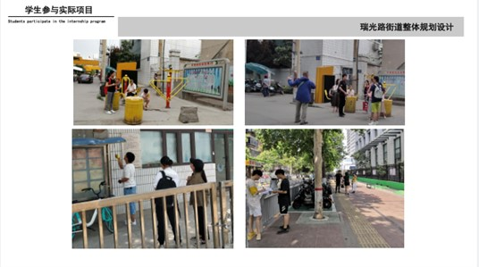

成果立项基础
艺术设计类专业是应用型本科院校普遍开设的专业，承担着服务地方社会文化和经济发展的重要使命。如何适应新时代需求，创新专业人才培养模式是应用型本科院校普遍关注和探索的重点。随着河南省确定“实施文旅文创融合”为十大发展战略之一，以及“加快推进文化强省建设”“设计河南：大力发展工业设计产业”等措施，也给地方应用型高校的文化艺术类专业人才培养提出了新的要求。因此，需要分析当前应用型高校艺术设计类专业育人模式存在的问题，探索并实践有效的改革和建设的措施，将高校人才培养、企业技术创新、行业服务紧密结合起来，构建科学合理的教育教学体系和评价体系，提升教师素质和教学质量，增强教师和学生了解行业产业前沿和实践能力，为社会提供更多的专业人才和技术创新成果。
成果在总结了郑州工程技术学院艺术设计类专业近年来教育教学改革基础上产生。学校依据《国家中长期教育改革和发展规划纲要》《关于引导部分地方普通本科高校向应用型转变的指导意见》《国务院办公厅关于深化产教融合的若干意见》等文件精神，紧密对接地方文化艺术产业发展需求，深化教学改革，推进学校重点“文化创意专业群”建设，积极搭建协同育人平台，全面提高人才培养质量，形成专业建设品牌特色，努力为区域经济社会发展提供有力的高素质应用型人才支撑。
为了更好发挥政府、行业企业和学校及科研院所等在立德树人方面的作用，成果提出了“政府引导、行企校协同、项目式教学与研发”政行校企“四位一体”协同育人模式的构建与实践。新时代下，伴随着经济社会的不断发展，通过实现政府、企业、学校以及科研院所等各参与主体的全面对接和深度互动可以促进高校场域内社会资源的高效分配和利用，全面提升人才培养质量。
“四位一体”协同育人模式的构建
（一）实践“政府引导、行企校协同、项目式教学与研发”政行校企“四位一体”协同育人平台，共同提升人才培养质量。
政府制定政策引导企业和高校之间进行协同合作，提供政策支持和实际需求。行业协会汇集行业力量和行业前沿，为教师和学生提供更新的实践指导。企业和学校共建实践育人基地，共同参与地方建设中的实际项目。
1. 政府统筹指导作用突出
政府是政产学研协同育人模式的主导，积极调动各界参与教育事业发展，提供政策、经费等支持。学校在郑州市委社治委的引导下，联合行业协会和企业，开展郑州市6区“小微美学营造项目”，将学生的毕业设计与郑州市社区治理的实际需求相结合。与惠济区人民政府签署校地合作框架协议，不断健全校地对接沟通机制，搭建社区治理研究平台，积极提供社会实践教育基地，创造学生良好的学习实践机会，进一步拓宽协同育人渠道，使学校、企业与政府之间信息共享、知识共享和成果共享，达到共同提高。
2. 企业参与度高
行业、企业参与到学校的教学活动中来是实现政产学研协同育人的关键。企业积极参与到学校人才培养过程中来，政府引导下和高校共同参与地方建设，一方面可以加深企业对地方建设需求的了解，提高企业社会声誉，同时满足企业对需求人才的培养目标的提前实施、对需求人才提前筛选，同时有助于高校培养满足地方发展的应用型人才，在项目完成过程中帮助学生提升职业素养和就业竞争力。 近年来，郑州工程技术学院艺术设计等专业教师团队积极对接适合学生就业的企业和手工艺非遗项目，积极引企入教，先后引进杰品陈设装饰设计有限公司、郑州新海岸科技发展有限公司、郑州如一文化发展有限公司等行业头部企业，以及黄河澄泥砚、烙画、砂画、掐丝画、PS修图等项目进入校内工作室，行校企联合培养人才，行业企业参与积极性较高。
3. 学生培养模式创新
政产学研协同育人模式下，学校利用企业资源和社会资源培养人才，将其与学校教育紧密结合起来，学生在校期间直接参与到实际项目运作流程，采用真题真做，解决实际问题，既培养学生实践动手能力和创新能力，又提高了学生参与社会实践的积极性和主动性。有效地解决了学校教育与市场需求相脱节的问题，全面提升学生的专业水平和社会适应能力，培养符合社会需要的高素质应用型人才。

4. 产学研合作层次深
政产学研协同育人模式下多方主体合作层次加深、合作形式多、合作范围广、合作效益高，达到了“政行企校”多方共赢的局面。河南省陶瓷协会、新海岸等多个学科相关行业协会和头部企业和艺术类专业共建校内外实践基地，不断参与地方文化建设中的实际项目，取得了诸多成绩，不仅扩大社会影响力，还产生了良好的经济效益，整体形成了一个良性循环，进一步促进了政行校企的深度合作。 学校根据国家和地方经济发展需要进行专业设置和调整。
行业、企业根据发展需要进行人才需求预测和岗位分析，为学校提供专业发展方向需求和指引，并提供实际的实践项目。
政府根据地方经济发展需要对学校的办学方向和专业设置进行宏观指导，促进学校的专业建设与地方产业结构对接，同时发挥指导、服务和监管作用，为学校提供良好的政策环境和社会环境，为学校和企业搭建合作平台；支持教育事业发展，调动企业参与高校办学的积极性，确保政产学研合作可持续发展。
科研院所凭借自身科研优势，与学校在合作中形成教研相长、协同育人，在科教融合体系中建立和推进人才培养方式改革，加强体系整体的创新能力，在培养学生实践能力的同时启发其创新能力。
（二）整合“行校企”教学资源，全方位优化课程体系
学校从地方经济社会发展需求出发，以培养地方社会经济发展需要的高素质应用型人才培养为目标，整合“行校企”多方资源，将专业理论教学、实践教学和素质教育有机结合起来，合作推动基于“真实项目”解决“真实问题”的课程建设，形成具有“政产学研”特色的人才培养课程体系。将科研人员和高新企业的研究成果向教学转化，同时通过实践创新给企业和行业提供高品质的解决方案，形成良性循环。
（三）建立“政产学研”合作的长效机制，充分发挥行业企业在培养应用型人才方面的作用
政产学研协同育人保障机制是政产学研协同育人模式顺利实施的重要保障。它主要包括三个方面：一是建立相关的管理制度和保障措施等；二是建立考核激励机制和管理评价体系等；三是建设相关的实验实训基地、教学资源等。
学校出台了《郑州工程技术学院校企合作管理办法》《郑州工程技术学院校企合作办学管理办法》《郑州工程技术学院“十四五”本科专业结构调整规划实施方案》等，以河南省、郑州市经济转型发展、产业结构调整和创新驱动对人才需求为导向，结合学校实际，坚持“撤、增、锻、塑”并举，调整优化专业结构，实现专业链与产业链、创新链等深度融合，着力提升本科专业建设水平和服务现代化河南建设能力。
印发《郑州工程技术学院2022版本（专）科人才培养方案修订指导意见》，要求各专业新修订的人才培养方案深入开展产教融合，提高人才培养的契合度。并于2024年对2022版人才培养方案进行调整优化，进一步将企业行业的实际需要融入人才培养方案的毕业要求和培养目标。
调动广大教职工依托单位从事科技成果转化的积极性、主动性、创造性，提升科技创新和社会服务能力，依托学校实际制定了《郑州工程技术学院科技成果转化管理办法》等多项管理。
学院也出台了外聘教师的聘任政策和管理制度、实践教学的管理和考核制度等，加大对教学的投入力度，保障合作良性运行，通过合作建立了信息交流平台、定期交流、成果共享等，促进政产学研协同育人持续发展。
目前郑州工程技术学院与多个行业协会和省内知名企业，共建校内外教学实践基地20多个，为学校人才培养提供有力保障。校将校内资源和行业、企业资源相结合，通过共建的平台为学生提供实践机会、参加培训活动的机会等，让学生在实践中锻炼自己。
同时，学校不仅积极开展引企入校，同时深入开展自主创新研发，给企业提供更多的研究成果支撑。先后建设有“柒炁”手工陶艺工作室和“无声艺术”装裱工作室，依据市场需求开发手工瑞兽香插、茶具、陶瓷装饰品等三个大类200多个品种，荣获全国残疾人大学生艺术展等20多项大奖。同上海心工坊社工事务所、郑州几何书店、建业电影小镇、河南民安集团方顶驿文旅小镇、深圳大芬艺术装饰公司等已开展合作，为项目的孵化和落地提供有力的支持。
2021年，以掐丝画为主要制作内容的“玲珑匠心团队”在以庆祝中国共产党建党100周年为主题系列38幅掐丝珐琅画受到了外界关注，该团队13名学生毕业后，进入中美国际创业港成为一批特殊的孵创业团队。该团队创作的多幅主体作品，先后在中美国际创业港和中美术馆、郑州师范学院嵩山学堂、郑州工程技术学院英才校区综合展厅巡回展览，受到省市领导好评，形成了学生就业、社会影响、经济效益的多方共赢，同时产生了很好的社会文化效益和经济效益。
（四）组建高素质、双师型的师资队伍，构建多维度的人才培养指导及效果评价体系
学校出台了《郑州工程技术学院关于加强双师双能型教师队伍建设的实施方案》、《郑州工程技术学院教师学历进修和从事博士后研究管理规定》等相关制度，加强政策引领作用，通过企业挂职、学历进修、课程进修、校企、校际、校政之间的交流合作等方式，从学校单向引才到人员双向流动等培育模式的转变，积极拓展培养途径，加强“双师双能型”师资队伍建设，促进人才培养。
学校从单向引才到人员双向流动等培育模式转变，一方面加强“双师双能型”师资队伍建设。同时各专业成立了由行校企共同组建的教学指导委员会，共同制定了《教学管理规定》规范教学过程管理。建立了一支以行业、企业专家为主体的兼职教师队伍，共同参与人才培养方案制订、课程教学、实践环节指导等人才培养全过程。通过地方政府和行业参与，完善人才培养评价体系。
例如，学校承担的郑州市城乡社区“小微美学营造”项目的最终评价，一方面是教师对学生毕业设计作品的评价，另一方面由郑州市委城乡社区发展治理委员会组织的评审会，邀请了市内5区的代表作为评委，评委包括了政府专家、社区人员以及社区居民，对学生承担完成的59个无主管楼院小微美学营造项目进行评审，并将部分设计作品进行施工对社区环境进行改造。
成果解决的问题
1. 解决专业人才培养与社会发展及行业需求不匹配的问题。
与部分企业的校企合作，缺乏政府和行业引导，无法准确把脉地方社会和行业发展的需要，和解决高素质人才培养的问题。因此构建政行校企协同育人的模式，通过政府政策引导以及提供现实需求，行业及企业提供行业前沿知识和案例，教师与学生提供理论知识和具体实践，通过解决具体实际问题来改进人才培养目标，重构教学体系。
2. 解决课程体系中科研、教学、实践环节脱节问题。
现有的课程体系中科研、教学、实践缺乏真实项目的支撑，无法了解学科前沿的发展需要和发展动态，理论知识和虚拟项目任务搭建的课程体系的严重制约专业发展，无法支撑学生职业素养和创新能力的培养，通过构建多主体参与和互动的教学模式，打通科研-教学-实践环节的壁垒，将科研人员和高新企业的研究成果向教学转化，同时通过实践创新给企业和行业提供高品质的解决方案，形成良性循环。
3. 完善应用型本科艺术设计类专业政产学研育人模式保障机制。
多主体在合作过程中由于各方目标存在差异、学校管理和保障机制不健全等多方因素，导致协同育人合作深度不够、持续性和稳定性不强。需要建立更完善的机制促进政行校企的深度合作和持续合作。
4. 解决人才培养过程指导和效果评价不全面、不完善的问题。
培养目标是否达成，在以往评价中缺乏来自地方、行业和企业的检验。一是缺乏对设计结果的可行性和实用性、创新性的全面评价；其次缺乏行业和企业的角度对学生职业能力、实践能力等人才培养质量标准的评价；三是缺乏从政府角度对于高校和企业在协同育人中发挥的作用，产生效果的全面评价。急需要构建以结果为导向，多维度的评价体系，使评价效果能够及时正向的促进教学体系的不断完善。
成果特色与创新
(一)成果特色
1. 应用性
本课题以新时代人才培养需求为引领，立足于地方经济社会和行业发展需求，注重对学生综合素质和创新能力的培养，实现了政府与学校之间、行业企业与学校之间、学校与学生之间的深度融合。将企业资源和学校资源有机地整合在一起，既能适应企业发展对人才的需要，也能满足学校办学对人才的需要，彰显了应用性的特色。
2. 科学性
本课题从实践教学环节入手，搭建了产学研深度融合的平台，实现了政府、学校、企业和行业等主体之间的无缝对接。经过近几年的探索与实践，已初步形成了政产学研协同育人的模式，并取得了一些成果，在一定程度上促进了学校办学质量和水平的提高，呈现了严谨的科学性。
3. 示范性
本课题探索“政府引导、行企校协同、项目式教学与研发”政行校企“四位一体”的协同育人艺术类专业人才培养模式，形成了具有一定特色的人才培养体系，同时构建了科学合理的制度保障体系，实现了协同育人机制的制度化和长效化，形成一套可借鉴和推广的经验，具有一定的示范性。
(二)创新点
1. “四位一体”多主体深度互动育人模式的创新
构建了“政府引导、行企校协同、项目式教学与研发”政行校企“四位一体”的协同育人模式，充分发挥了多方主体在人才培养中的积极作用。
2. 以解决“真实问题”为导向，实现多方共赢为目的的策略创新
整合多方资源，合作推动基于“真实项目”解决“真实问题”的课程建设。将科研人员和高新企业的研究成果向教学转化，同时通过实践创新给企业和行业提供高品质的解决方案，并共同服务地方经济社会发展，达到多方共赢，形成深度合作的良性循环。
成果的实践及推广应用效果
1. 学生受益面广，人才培养质量显著提升。
政产学研协同育人模式下，学生综合能力不断增强，不仅体现在专业技能方面，同时还培养了学生全面思考习惯，认真严谨的意志品质，勇于探索的开拓精神，实事求是的行为标准，完成立德树人的根本任务。学生在“挑战杯”“米兰设计周”“创意河南”等学科竞赛中，联创佳绩，成果丰硕。学生获得各类奖项达到100多项，其中获得获批大创项目2项，国家级学科竞赛奖项2项，省级学科竞赛奖项10项；指导学生主导的郑州市社区改造方案分别获得2022年郑州市城乡设计区“小微美学营造”项目一等奖、二等奖、三等奖30多项，指导教师获得“优秀指导教师奖”12项。毕业生就业情况良好，连续三年就业率持续保持在90%以上，用人单位对学生综合素质满意率达到96%。
2. 教师教学能力显著增强，教科研成果丰硕。
本成果组建了一只来自于行业内不同企业、不同高校的教学团队，通过共同实践，交流互通，学习分享，教学能力得到显著增强，同时取得了丰硕的科研成果，发表了教研文章7篇，出版专著1部，出版数字化教材1部，申请了校级一流课程1门，完成了郑州市教学改革项目1项，校级教学改革项目1项。主持的教育部学生司第二期“供需对接就业育人项目”项目1项。同时依据项目成果申请的发明专利获得授权，并实现技术转让。依托项目成果申报的河南省社科联项目获得一等奖1项，获得二等奖1项。

3. 助力地方经济社会发展。
学校不断对接地方政府，根据地方发展需要开展各项设计服务。学校在郑州市市委社治委的引导下，将学生的毕业设计与郑州市社区治理的实际需求相结合，真题真做，对郑州市内五区开展小微美学营造。郑州市邀请了市内5区政府专家、社区人员以及社区居民，对设计作品进行评审，并将部分设计作品进行施工对社区环境进行改造，项目正在逐渐落地实施。通过政行校企共同合作，实现人才培养质量提升和服务地方能力提升的双赢局面。
4. 推广示范效应明显，带动辐射作用突出。
本成果在省内外多所高校内推广，受到其他院校和社会的广泛认可，成果已在多所兄弟院校进行推广应用，在区域范围内具有良好的社会影响力和示范效应。经郑州轻工业大学、新乡工程学院等高校强化对艺术设计类专业的带动，示范效应显著。有效地解决了学校教育与经济社会发展需求相脱节的问题。成果得到了学习强国、河南高教、河南高校行、大河网、大象新闻等媒体多次报道。获得了良好的社会评价。